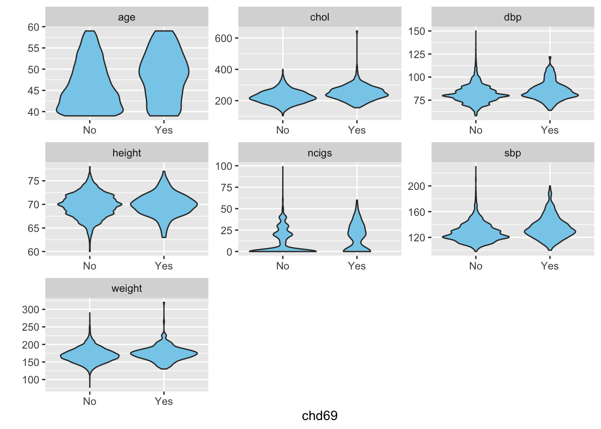
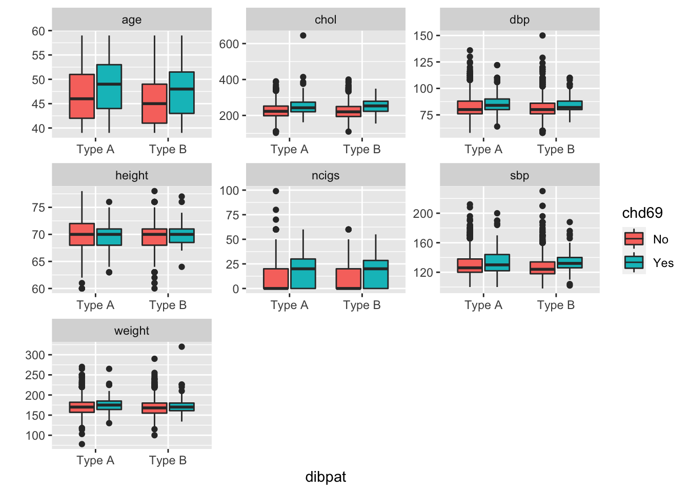
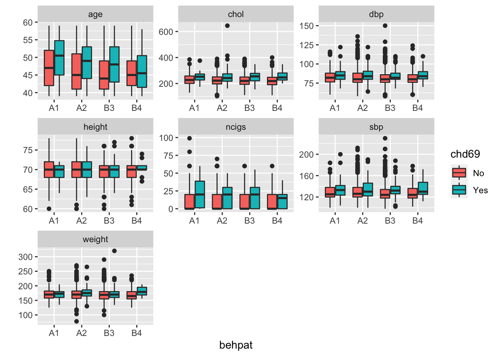

The Western Collaborative Group Study (WCGS), a prospective cohort studye, recruited middle-aged men (ages 39 to 59) who were employees of 10 California companies and collected data on 3154 individuals during the years 1960-1961. These subjects were primarily selected to study the relationship between behavior pattern and the risk of coronary heart disease (CHD). A number of other risk factors were also measured to provide the best possible assessment of the CHD risk associated with behavior type. Additional variables collected include age, height, weight, systolic blood pressure, diastolic blood pressure, cholesterol, smoking, and corneal arcus.
The main objective of this report is to find the important factors which affects the risk of Coronary heart disease event. To finish these tasks, some exploratory analysis and visualizations are performed.
The data set is provided by class PM592. I will upload the dataset on Github. Similar dataset can be also be found at https://rdrr.io/cran/epitools/man/wcgs.html. The dataset includes the following columns (columns irrelevant are removed):
chd69: Coronary heart disease event (0 = none; 1 = yes), dependent variable
age: Age (age in years)
*arcus: Corneal arcus (0 = none; 1 = yes)
behpat: Behavior pattern
chol: Cholesterol (mg/100 ml)
dbp: Diastolic blood pressure (mm Hg)
dibpat: Dichotomous behavior pattern
height: Height (height in inches)
ncigs: Smoking (Cigarettes/day)
sbp: Systolic blood pressure (mm Hg)
smoke: Smoking state
weight: Weight (weight in pounds)
Explanation for variable with the *: Corneal arcus is a condition that happens when you have a white, blue or gray crescent shape (arc) made of lipid (fatty) deposits that curves around the outer edges of the cornea of the eye. The curve can extend all around the cornea to form a ring.
The data contains some missing values as the figure above shown. The variable chol contains 12 missing values and arcus contains 2 missing values. The total number of observations are 3154, which indicates that only a few observations contains missing values. Thus observations with missing values are removed.
In this section, the summarily descriptive statistics are constructed as Table1:
| with CHD | without CHD | |
|---|---|---|
| n | 257 | 2897 |
| age (mean (SD)) | 48.49 (5.80) | 46.08 (5.46) |
| arcus = 1 (%) | 102 (40.0) | 839 (29.0) |
| behpat (%) | ||
| A1 | 30 (11.7) | 234 ( 8.1) |
| A2 | 148 (57.6) | 1177 (40.6) |
| B3 | 61 (23.7) | 1155 (39.9) |
| B4 | 18 ( 7.0) | 331 (11.4) |
| chol (mean (SD)) | 250.07 (49.40) | 224.26 (42.22) |
| dbp (mean (SD)) | 85.32 (10.31) | 81.72 (9.62) |
| dibpat = Type B (%) | 79 (30.7) | 1486 (51.3) |
| height (mean (SD)) | 69.94 (2.41) | 69.76 (2.54) |
| ncigs (median [IQR]) | 20.00 [0.00, 30.00] | 0.00 [0.00, 20.00] |
| sbp (mean (SD)) | 135.39 (17.47) | 128.03 (14.75) |
| smoke = Yes (%) | 159 (61.9) | 1343 (46.4) |
| weight (mean (SD)) | 174.46 (21.57) | 169.55 (21.01) |
In the Table1, the categorical variables such as behpat, dibpat and smoke are summarized as counts and proportion of each level, the approximately normally distributed numeric variables are summarized as mean and standard deviance. The ncigs is serious right skewed distributed, thus it is summarized as median and IQR.
Single Variable Analysis
According to the statistic table, proportion of Corneal arcus is different obviously between with and without CHD. Besides, Behavior pattern , Dichotomous behavior pattern and smoke can also affect the proportion of CHD according to the table above. Numerical variables are also the potential risk factors affecting CHD. However, distribution would determine the form of the numerical predictors, which needs to be revealed by some visualization method such as violin plot:

As a result, the age of observation without CHD is concentrated at 40 but the CHDs are concentrated at 50 age. It is also revealed that the distribution of age is truncated that the observation is only contains the age lower than 40. The distribution of these predictors are almost symmetric bell shaped except ncigs, which shows the median and IQR, constructed in Table1, is more effective than mean and standard deviance.
Interaction
Although visualization in single variable way would reveal which variables are potential risk factors of CHD, the performance of each factors in sub-groups may be different. Thus to investigate that whether the risk factors performed differently among sub-groups (such as with people with different Dichotomous behavior pattern).

As shown above, dibpat does not change the performance of these numeric factors due to the patterns are not different between type A and B. However, while behpat=B4, the age of people with CHD is not different with those without CHD. In other words, for people with is B4 behavior pattern, age is not a risk factor anymore. Besides, weight is not different obviously between people with and without CHD, but while behpat=B4, weight of people with CHD is higher obviously than those without CHD. In other words, weight is a risk factor for people with B4 behavior pattern.
Finally, the risk factors of CHD are revealed by exploary visualization analysis. According to the result, the risk factors include Corneal arcus, Behavior pattern , Dichotomous behavior pattern, smoke (as well as number of Cigarettes), age, Cholesterol and blood pressure (sbp and dbp). Besides, Behavior pattern would also affect the relationship between CHD and age/weight.
Copyright © 2022, Eleanor Bi.